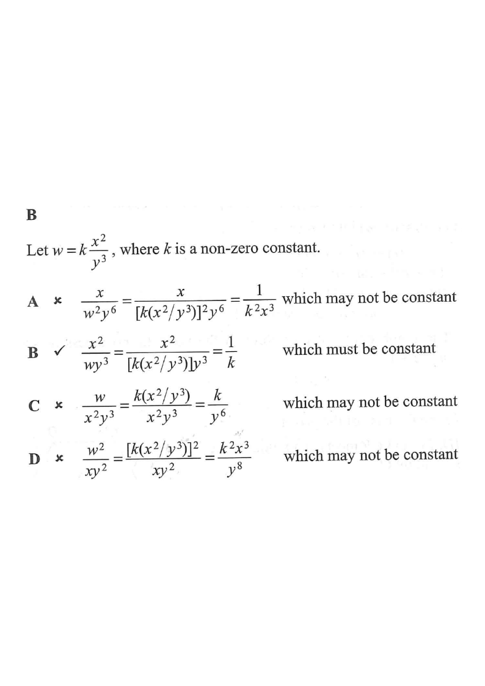

If $w$ varies directly as the square of $x$ and inversely as the cube of $y$,
which of the following must be constant?
A. $\dfrac{x}{w^{2}y^{6}}$
B. $\dfrac{x^{2}}{wy^{3}}$
C. $\dfrac{w}{x^{2}y^{3}}$
D. $\dfrac{w^{2}}{xy^{2}}$

Figure (original exam diagram)
1 Translate the wording into an equation
Joint Variation\(w=\dfrac{kx^{2}}{y^{3}}\)Direct variation as \(x^{2}\) puts \(x^{2}\) on top; inverse variation as \(y^{3}\) puts \(y^{3}\) below.
"$w$ varies directly as the square of $x$" means $w \propto x^{2}$.
"$w$ varies inversely as the cube of $y$" means $w \propto \dfrac{1}{y^{3}}$.
Combining both: $w = k\dfrac{x^{2}}{y^{3}}$, where $k$ is a non-zero constant.
💡 Direct variation → multiply on top; inverse variation → divide (goes to denominator).
2 The target of the question
We need an expression built from $w,x,y$ that equals a pure number (a constant) once
$w = k\dfrac{x^{2}}{y^{3}}$ is substituted. So the powers of $x$ and $y$ must cancel, leaving only $k$.
💡 Test each option: substitute $w = kx^{2}y^{-3}$ and see if $x$ and $y$ disappear.
Simplifying Algebraic Fractions by Cancelling\(\dfrac{x^{2}}{\left(k\dfrac{x^{2}}{y^{3}}\right)y^{3}}=\dfrac{1}{k}\)Substituting \(w=\dfrac{kx^{2}}{y^{3}}\) into the option cancels every \(x\) and \(y\), leaving only \(\dfrac{1}{k}\).
Answer: B — $\dfrac{x^{2}}{wy^{3}} = \dfrac{1}{k}$, which is a constant.
PRACTICESimilar question — try it yourself
Question. If \(z\) varies directly as \(\sqrt{x}\) and inversely as the square of \(y\), which of the following must be constant? (A) \(\dfrac{zy^{2}}{\sqrt{x}}\) (B) \(zy^{2}x\) (C) \(\dfrac{z}{y^{2}\sqrt{x}}\) (D) \(\dfrac{z^{2}y}{x}\)
Show the worked solution
Step 1. Write the variation as \(z=\dfrac{k\sqrt{x}}{y^{2}}\), where \(k\) is a non-zero constant.
Step 2. Option A: \(\dfrac{zy^{2}}{\sqrt{x}}=\dfrac{k\sqrt{x}}{y^{2}}\cdot\dfrac{y^{2}}{\sqrt{x}}=k\) — a constant ✓
Step 3. Option B: \(zy^{2}x=k\sqrt{x}\cdot x=kx^{3/2}\), which depends on \(x\) ✗
Step 4. Options C and D still contain \(x\) or \(y\), so only A is constant.